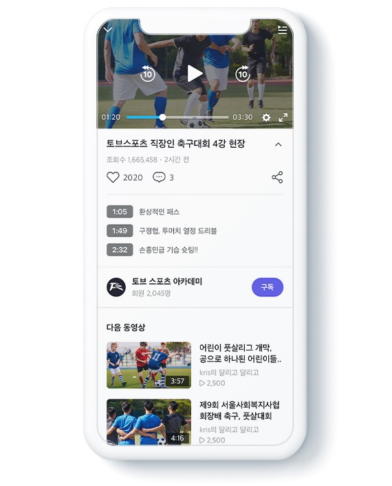
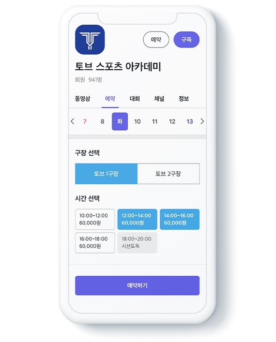
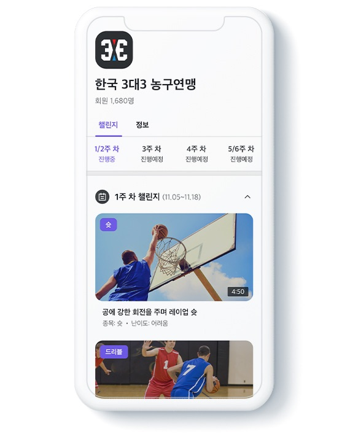
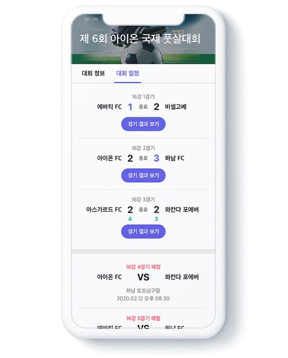

|  |
라이브영상, VOD 저장 경기 풀 영상, 편집영상 등 채널 사업자 페이지에 등록된 영상을 언제 어디서나 확인 할 수 있습니다. |
|
경기장예약 경기 풀 영상, 편집영상 등 채널 사업자 페이지에 등록된 영상을 언제 어디서나 확인 할 수 있습니다. |
 |
|  |
대회생성, 챌린지(미션)수행 매장(채널사업자)만의 자체 대회를 만들 수 있으며 경기영상, 경기기록이 표기되어 매장만의 리그를 운영할 수 있습니다. 또한, 챌린지(미션) 제공하여 회원 참여를 유도할 수 있습니다. |
|
경기기록 매 경기별 경기기록을 제공하며, 승패, 승률, 개인기록이 표기됩니다. |
 |
TAMM(스마트 티켓 운영 플랫폼)
실시간 입장, 프로모션, 이벤트 추첨 등 다양한 정보를 제공하는 스마트 티켓 모바일 플랫폼BRISM(스코어 관리 및 영상콘텐츠 제공 플랫폼)
- 야구, 테니스, 골프 및 생활스포츠에서 디지털 전광판에 경기 기록을 실시간으로 제공